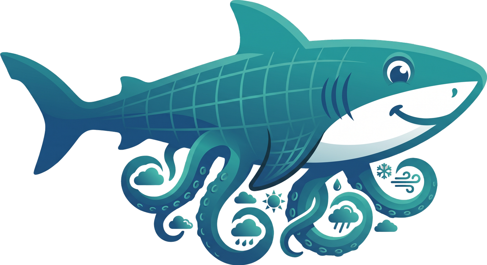

Cloud-native GRIB cropper — crop before you download
GFS today · HRRR, NAM, ECMWF open-data coming as the community grows
sharktopus is an open-source Python library that crops GRIB2 weather data
in the cloud — by bounding box, variables, and vertical levels — before it hits
your disk. It deploys a small serverless wgrib2 worker to AWS Lambda, Google
Cloud Run, or Azure Container Apps; each user runs on their own cloud account and pays
their own (typically near-zero) bill.
Today it ships with the NOAA Global Forecast System (GFS 0.25°) end-to-end. The internals are deliberately product-agnostic — batch orchestration, byte-range streaming, cropping, inventory, quotas — so adding a new product (HRRR, NAM, RAP, ECMWF open-data) is a matter of plugging in a URL resolver and a catalog, not rewriting the core. See docs/ADDING_A_PRODUCT.md.
sharktopus is consumer-agnostic: the output is a valid cropped GRIB2 file. Typical use cases:
The typical win for a 72-hour regional domain: ~12 GB → ~200 MB of transfer, ~20 min → ~30 s wall time. Defaults ship WRF-canonical variable and level sets because that's the lineage — override with your own lists for any other consumer.
sharktopus was originally developed to support the CONVECT project — “Convective Systems Forecasting: Integrated Analysis of Numerical Modeling, Radar and Satellites” (“Previsão de sistemas convectivos: análise integrada da modelagem numérica, radar e satélites”, CNPq Extreme Events Call 15/2023), coordinated by Dr. Tânia Ocimoto Oda. CONVECT is executed at IEAPM (Instituto de Estudos do Mar Almirante Paulo Moreira, Brazilian Navy) with partner institutions UENF (Universidade Estadual do Norte Fluminense Darcy Ribeiro) and UFPR (Universidade Federal do Paraná). sharktopus itself is maintained as an independent open-source project. Governance is merit-based and documented in GOVERNANCE.md. Contributors retain their own institutional affiliation — see AUTHORS.md.
sharktopus is not a product of, endorsed by, or representing the Brazilian Navy, CNPq, IEAPM, UENF, or UFPR. Institutional acknowledgement and project funding context are not institutional ownership.
Issues and pull requests:
github.com/sharktopus-project/sharktopus/issues
Project email: sharktopus.convect@gmail.com